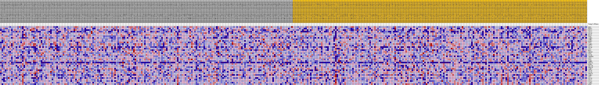
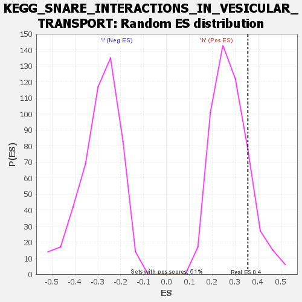

| | | Dataset | VCAN.VCAN.cls#h_versus_l.VCAN.cls#h_versus_l_repos |
| Phenotype | VCAN.cls#h_versus_l_repos |
| Upregulated in class | h |
| GeneSet | KEGG_SNARE_INTERACTIONS_IN_VESICULAR_TRANSPORT |
| Enrichment Score (ES) | 0.35528052 |
| Normalized Enrichment Score (NES) | 1.2699616 |
| Nominal p-value | 0.15717092 |
| FDR q-value | 0.9397664 |
| FWER p-Value | 0.964 |
Table: GSEA Results Summary
 Fig 1: Enrichment plot: KEGG_SNARE_INTERACTIONS_IN_VESICULAR_TRANSPORT
Fig 1: Enrichment plot: KEGG_SNARE_INTERACTIONS_IN_VESICULAR_TRANSPORT
Profile of the Running ES Score & Positions of GeneSet Members on the Rank Ordered List
| SYMBOL | TITLE | RANK IN GENE LIST | RANK METRIC SCORE | RUNNING ES | CORE ENRICHMENT | | 1 | USE1 | na | 562 | 0.109 | 0.0446 | Yes |
| 2 | BNIP1 | na | 1120 | 0.095 | 0.0823 | Yes |
| 3 | STX11 | na | 1333 | 0.091 | 0.1241 | Yes |
| 4 | STX1A | na | 1714 | 0.085 | 0.1600 | Yes |
| 5 | STX10 | na | 1764 | 0.084 | 0.2015 | Yes |
| 6 | BET1L | na | 1800 | 0.084 | 0.2430 | Yes |
| 7 | YKT6 | na | 4668 | 0.059 | 0.2206 | Yes |
| 8 | VAMP5 | na | 4811 | 0.058 | 0.2471 | Yes |
| 9 | VAMP7 | na | 4834 | 0.058 | 0.2757 | Yes |
| 10 | GOSR2 | na | 5394 | 0.054 | 0.2929 | Yes |
| 11 | STX3 | na | 6763 | 0.046 | 0.2915 | Yes |
| 12 | VAMP3 | na | 6780 | 0.046 | 0.3146 | Yes |
| 13 | STX12 | na | 7692 | 0.042 | 0.3192 | Yes |
| 14 | STX1B | na | 8534 | 0.038 | 0.3229 | Yes |
| 15 | STX2 | na | 9834 | 0.032 | 0.3153 | Yes |
| 16 | BET1 | na | 9943 | 0.031 | 0.3290 | Yes |
| 17 | SNAP47 | na | 10416 | 0.029 | 0.3351 | Yes |
| 18 | STX8 | na | 10585 | 0.028 | 0.3463 | Yes |
| 19 | VTI1B | na | 10848 | 0.027 | 0.3553 | Yes |
| 20 | TSNARE1 | na | 11876 | 0.023 | 0.3483 | No |
| 21 | STX5 | na | 14822 | 0.012 | 0.3009 | No |
| 22 | STX4 | na | 14832 | 0.012 | 0.3068 | No |
| 23 | VAMP8 | na | 15541 | 0.010 | 0.2988 | No |
| 24 | SNAP25 | na | 16754 | 0.006 | 0.2797 | No |
| 25 | GOSR1 | na | 25174 | -0.011 | 0.1330 | No |
| 26 | SEC22B | na | 28970 | -0.022 | 0.0753 | No |
| 27 | SNAP29 | na | 30371 | -0.026 | 0.0629 | No |
| 28 | VAMP2 | na | 33218 | -0.034 | 0.0283 | No |
| 29 | STX19 | na | 33786 | -0.035 | 0.0357 | No |
| 30 | STX18 | na | 38383 | -0.047 | -0.0237 | No |
| 31 | SNAP23 | na | 38658 | -0.048 | -0.0045 | No |
| 32 | VAMP1 | na | 39786 | -0.051 | 0.0008 | No |
| 33 | STX7 | na | 46145 | -0.069 | -0.0794 | No |
| 34 | STX16 | na | 49661 | -0.082 | -0.1017 | No |
| 35 | STX17 | na | 50277 | -0.085 | -0.0701 | No |
| 36 | VTI1A | na | 51851 | -0.093 | -0.0515 | No |
| 37 | VAMP4 | na | 52788 | -0.100 | -0.0183 | No |
| 38 | STX6 | na | 54692 | -0.125 | 0.0104 | No |
Table: GSEA details [plain text format]

Fig 2: KEGG_SNARE_INTERACTIONS_IN_VESICULAR_TRANSPORT
Blue-Pink O' Gram in the Space of the Analyzed GeneSet

Fig 3: KEGG_SNARE_INTERACTIONS_IN_VESICULAR_TRANSPORT: Random ES distribution
Gene set null distribution of ES for KEGG_SNARE_INTERACTIONS_IN_VESICULAR_TRANSPORT